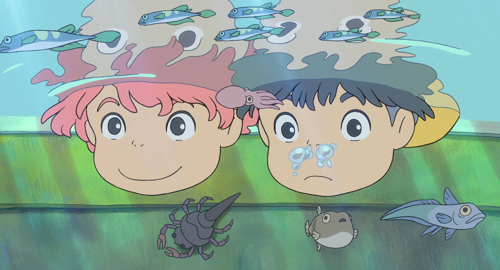
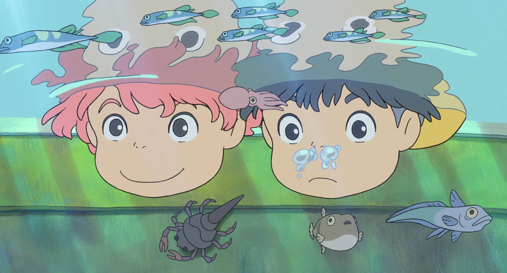

吉卜力電影介紹
每一部動畫都是人生中不同階段的回憶
吉卜力動畫不止存在於我們童年，也是我們一路成長的啟蒙夥伴。
在眾多吉卜力作品中，
透過「再看一遍」的過程「再次體驗」大開眼界的感覺，同時也是「再次領悟」人生哲理的觀念更新。
#反戰思想 #和平主義 #悲劇底下的人們
- 1984 《風之谷》
- 1986 《天空之城》
- 1988 《龍貓》、《螢火蟲之墓》

https://www.ghibli.jp
對於戰爭時代的無能為力，在動畫作品中嶄露無遺，寄託一切悲傷的情緒，也將其轉化成停止悲傷的力量。
1988年《龍貓》和《螢火蟲之墓》同時上映，背後其實有一個票房的考量，製作過程中製片人曾說：
「我們的孩提時代都在戰火中度過，過得無比艱辛，而戰後當大人們都灰心喪志的時候，只有小孩子還生龍活虎的。」
#女權時代 #超級女聲 #開創自我道路的堅強女性
- 1989 《魔女宅急便》
- 1991 《兒時的點點滴滴》
- 1992 《紅豬》
- 1993 《海潮之聲》

https://www.ghibli.jp
二十幾年過去，女性在整個社會的地位是否已全然的和男性平起平坐，平心而論；也許仍還是有不少刻板印象未被翻轉。
吉卜力動畫搶先把女生這樣的存在，以不同人生故事刻劃成形，她們不是強烈的歌頌女權主義，
相對溫和的用最簡單的道理和觀眾說明； 「世界是世界，而妳仍是妳，妳知道妳可以。」
#環境變遷 #社會議題 #那些改變與不變的事物
- 1994 《平成狸合戰》
- 1995 《心之谷》
- 1997 《魔法公主》
- 1999 《隔壁的山田君》

https://www.ghibli.jp
1994後，吉卜力作品好像開始出現了一點大自然的反思。
都市開發成了《平成狸合戰》的主要議題，
因為沒有武器，以變身術來抵抗人類，電影幽默的闡述了大自然議題的難解之處。
#奇幻際遇 #虛構寫實 #寂寞與愛本是同根生
- 2001 《神隱少女》
- 2002 《貓的報恩》
- 2004 《霍爾的移動城堡》
- 2008 《崖上的波妞
 

https://www.ghibli.jp
吉卜力動畫讓人深深著迷的一個原因；是它充滿著奇幻的想像，像是給大人讀的童話，
卻不是寓言故事明確地定論一種道裡，每每都是不斷刷新世界觀的華麗奇想。
宮崎駿介紹影片
超越平凡的凡人，日本影史票房紀錄人 - 宮崎駿的動畫電影與人生【 深入解析 】 - 上集
吉卜力官網https://www.ghibli.jp